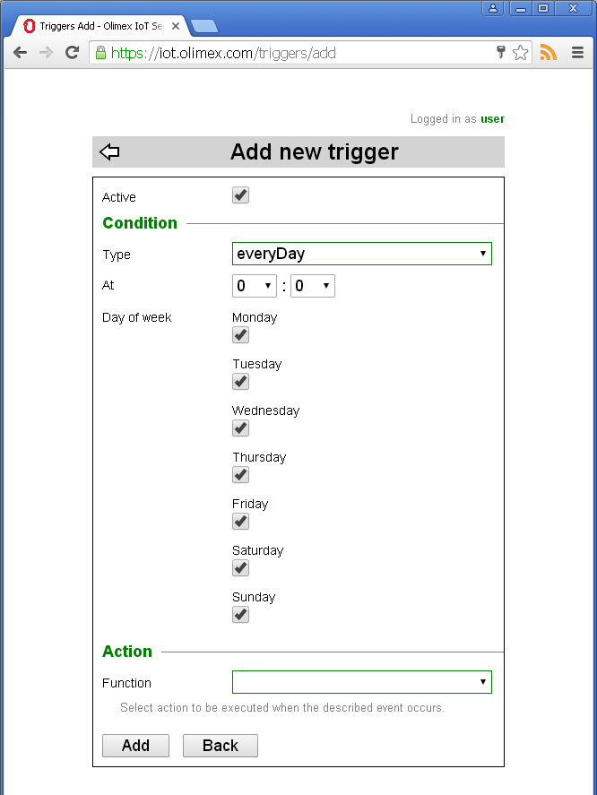

Back to OlimexIoT Help
A trigger is a condition, that causes Action to take place, when met. Triggers can be created by the plugins or by the user. User-created triggers can be enabled, disabled and edited by the user while plugin-created ones can not. Admin user can create triggers which are system wide (valid for all users). These triggers can not be modified by regular users. They can create triggers valid only for themselves.
Triggers are accessible from the main screen - click on the trigger icon .

Plugin or admin created triggers are shown in black, disabled - in red, active in blue color. To manage a trigger use its menu .
Click on trigger description to view detailed information about the parameter values passed to the action.
To add a new trigger click on the + sign located in the upper right corner.
To create new trigger you should
There are three kinds of triggers
Depending on what condition type you choose there are different parameters to define the condition.
This event occurs when the IoT Node connects to the IoT Server for the first time or after connection drop. After successful authentication the server requests information about discovered IoT Devices connected to the node. The response is used to register the reported devices.
To define the condition you should choose the Node and the Device for which the trigger will fire. You can use All nodes and All devices options to fire trigger no matter of what is particular node or device.
This event occurs when an established connection between IoT Node and IoT Server is lost.
To define the condition you should choose the Node for which the trigger will fire. You can use All nodes option to fire trigger no matter of what is particular node is.
This event occurs when an device property changes its value.
To define the condition you should choose the Node and the Property for which the trigger will fire. You can use All nodes option to fire trigger no matter of what is particular node.
In addition you can specify comparison operation by selecting Operator and Value. if Operator and Value are left empty any change will cause trigger to fire.
For example this trigger will fire for All nodes having MOD-EMTR device when the value reported for VoltageRMS property is greater than 250.
It is possible to apply a Filter over the property value. Depending on selected filter different parameters might be required.
This trigger will fire once every minute.
This trigger will fire once every hour.
To define the condition you should choose at which minute the trigger will fire.
This trigger will fire once every day.
To define the condition you should choose at which hour and minute the trigger will fire. You can specify the trigger to be fired on certain week days.
This trigger will fire once every month.
To define the condition you should choose at which day, hour and minute the trigger will fire. There is a special value Last day to match last day of the month.
For example if you choose every 31 day of the month instead of Last day the trigger will never fire in february.
This trigger will fire once per year.
To define the condition you should choose at which month, day, hour and minute the trigger will fire.
Select an action to be executed when the trigger fires.
Depending on which action you choose different set of parameters will be shown.
There are some parameter value special input types
There is a special value - Event Node -. It is used when condition is met for All nodes and we want action to use the node which emits the event.
If we want some of device property values to be part of the parameter value we include property name in square brackets. This input allows to easily select corresponding properties. Just position cursor where you want value to be displayed and click on light bulb on the right. Then select property you want to use.
Properties shown in green color are specific for the device selected in condition section above. Properties in black are present for all devices.
It is possible to combine more than one property value in the same parameter.
When the example trigger below fires user will receive an e-mail looking like
Subject: Lost connection to ESP_PLUG
Message Body: Connection close - 1001: Rebooting
Back to OlimexIoT Help